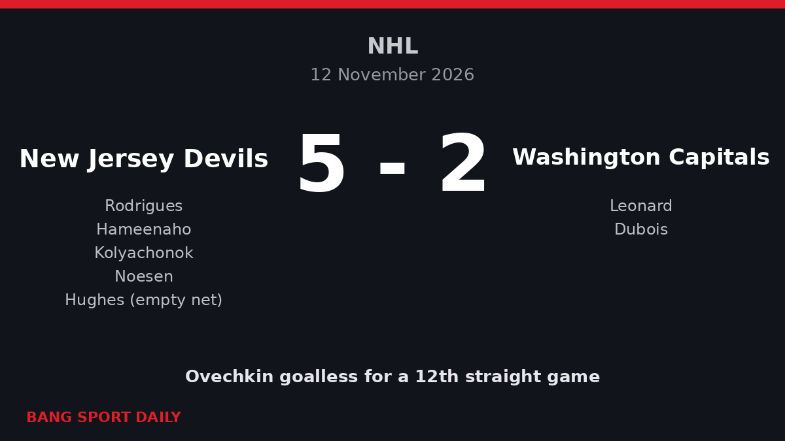

Ovechkin's Goal Drought Reaches 12 Games as Devils Beat Capitals 5-2
In his announced final season, the NHL's all-time leading goalscorer has one goal in 17 games, close to the longest drought of his career.

What happened
The New Jersey Devils beat the Washington Capitals 5-2 at the Prudential Center in Newark on Thursday 12 November 2026, and Alex Ovechkin again failed to score. He finished the game at minus one.
Washington led 2-1 after goals from Ryan Leonard on the power play and Pierre-Luc Dubois. The Devils levelled through Lenni Hameenaho in the second period, then won it in the third: Vladislav Kolyachonok scored the winner in his first game for the club, Stefan Noesen added a breakaway goal and Jack Hughes hit the empty net. Goaltender Connor Hellebuyck made 26 saves and has won all six of his starts since joining New Jersey from Winnipeg.

Why it is being talked about
Ovechkin, 41, announced in September that this season would be his last. Before Thursday he had one goal and four points in 16 games and had gone 11 matches without scoring, according to TSN. The Devils game extended that run to 12, the second-longest drought of his career after a 14-game spell early in the 2023-24 season. His average ice time of 13 minutes 47 seconds is a career low.
The slump stands out because of his record: he passed Wayne Gretzky as the NHL's all-time leading goalscorer in April 2025 and scored 32 goals last season. Before this season he had reached 30 goals in 20 of his 21 NHL seasons.
Key facts and numbers

- Score: Devils 5-2 Capitals.
- Ovechkin this season: 1 goal, 4 points, 17 games.
- Career goals: 930.
- Capitals: 10-7-0; Devils: 14-6-0, seven straight home wins.
What happens next
Coach Spencer Carbery has kept Ovechkin on the top power-play unit and told the Washington Post he is "happy with his play". Ovechkin said: "You just have to stick with it."